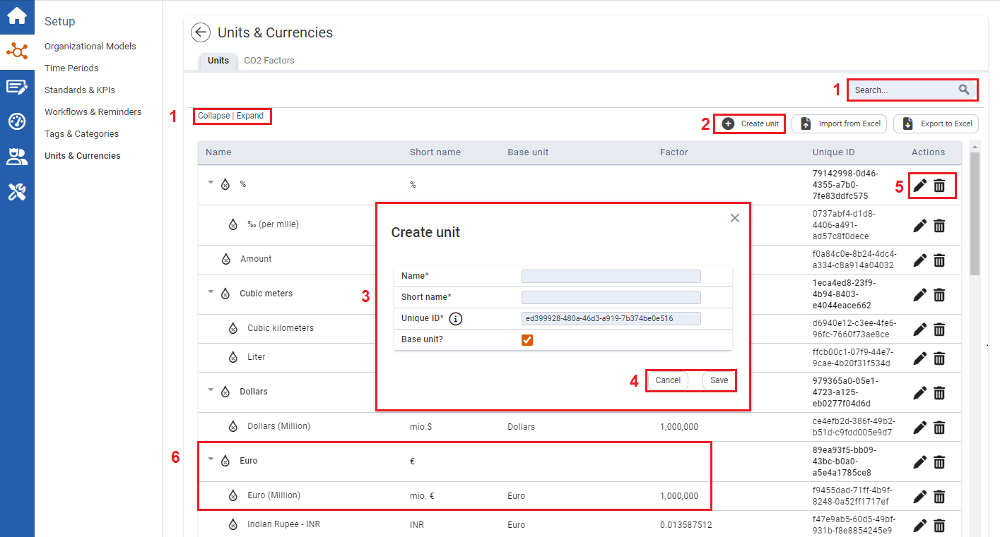
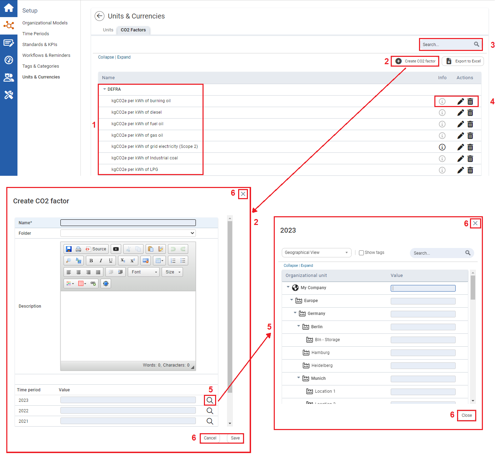

Units of measurement and, in certain circumstances, conversion factors are required for recording quantitative KPIs. In the Units & Currencies module, common units are present for recording sums of money, weights, volumes, amounts of energy, etc. In addition, you can add and manage new units and CO2 factors.

1
By using Expand all or Collapse all you can either display all units or limit the table to base units. Alternatively, you can use the arrows on the left, next to the base units, to expand individual sections. You can also search for units on the right side.
2
ClickCreate Unit to enter a new unit.
3
Enter the Name and Short name and indicate whether it is a Base unit. If not, select a Base unit as a reference point and enter a Factor for the conversion. For example, the new unit "kilometers" (km) is related to the base unit "meters" (m) by a factor of 1000 (1000 m = 1 km).
4
Click Save to save the new unit. If you close the window by clicking Cancel or x, your entries are discarded.
5
You can only edit or delete units that have been created by yourself or your colleagues.
Click to edit a unit. To delete a unit, click at the end of the row.
6
All saved units are listed in the overview in a structured manner according to base units. As well as the Name and Short name, the table includes the Base unit and the Factor by which the unit can be converted into the base unit. For base units, the factor is always given as 1.
CO2 Factors
CO2 Factors allow you to centrally manage different factors. You can change the factor for each time period and organizational unit, so that the system always calculates with the corresponding conversion factor.

1
Here you can see the Name and Description of all existing conversion factors.
2
Click to create new conversion factors. Then, enter the Name and a Description. Optionally, you can move the factor into a folder. You can also enter the values of the factor here.
3
The Search allows you to search within the conversion factors.
4
Click to edit the name, description and the value of each time period and organizational unit. In addition, you can move the factor into a folder. Click to delete a factor.
5
Note: If you enter a value for a higher-level organizational unit, the value will also apply to all units below.
Click to open the organizational model, where you can set the values for all organizational units.
6
Click Save to save the new conversion factors. If you close the window by clicking Cancel or x, your entries will be discarded.
 Create Unit to enter a new unit.
Create Unit to enter a new unit.  to edit a unit. To delete a unit, click
to edit a unit. To delete a unit, click  at the end of the row.
at the end of the row. to create new conversion factors. Then, enter the Name and a Description. Optionally, you can move the factor into a folder. You can also enter the values of the factor here.
to create new conversion factors. Then, enter the Name and a Description. Optionally, you can move the factor into a folder. You can also enter the values of the factor here. to edit the name, description and the value of each time period and organizational unit. In addition, you can move the factor into a folder. Click
to edit the name, description and the value of each time period and organizational unit. In addition, you can move the factor into a folder. Click  to delete a factor.
to delete a factor.  to open the organizational model, where you can set the values for all organizational units.
to open the organizational model, where you can set the values for all organizational units.